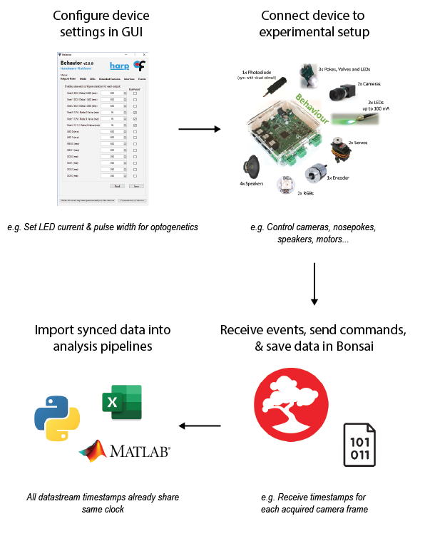

Date: Jun 28, 2022

Neuroscience experiments often rely on multiple parallel datastreams, acquired from different devices at different frequencies. As setups increase in complexity, temporally aligning these datastreams rapidly becomes more difficult.
Harp is a family of devices that configure, control, & track a wide range of peripheral devices such as cameras, LEDs, nosepokes, & motors. Combining Harp devices is an easy way to extend experimental setup functionality with integrated timestamp synchronisation across devices.
More about why Harp was developed
See here for a list of existing devices. Don’t see what you’re looking for? Harp protocols were designed so that new devices can be developed that will interact seamlessly with existing tools.
Using Harp Devices
Key Specifications
Communication protocol and architecture standardized across devices
Streamlined communication when adding new devices to setup, and reduces time and effort of developing new devices
Integrated hardware synchronization
Eliminates need for extra inter-device synchronization TTLs or post-hoc timestamp alignment
Intuitive graphical tools for device configuration
Easy to choose the settings your setup requires
Event-based protocol
Smaller file sizes as data is transmitted when changes occur, rather than at set frequencies like in traditional hardware
Bonsai, Matlab, LabVIEW, and Python compatible
Easily integrate synchronized data into existing analysis pipelines
Getting Started


License#
This work is licensed under CC BY-SA 4.0.
To view a copy of this license, visit https://creativecommons.org/licenses/by-sa/4.0/